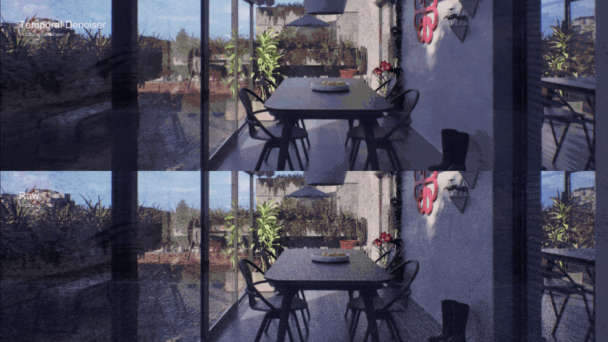
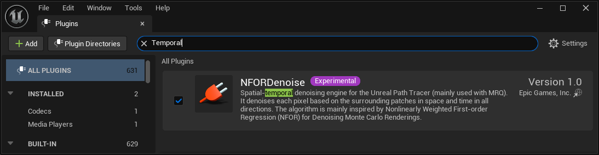
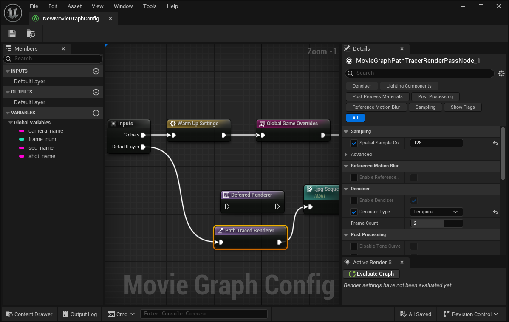
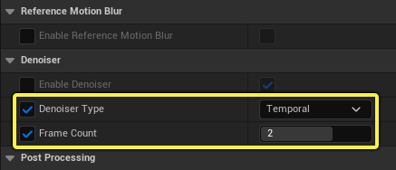
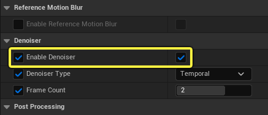
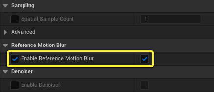
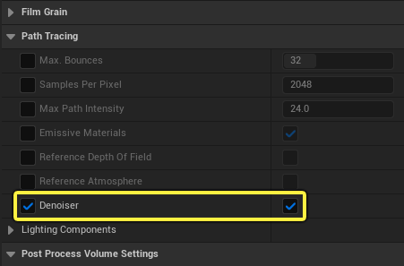

Узнайте, как использовать эту функцию экспериментальную, но будьте осторожны при ее применении.
NFOR Denoiser — это пространственно-временной механизм шумоподавления для Path Tracer в Unreal Engine, разработанный для обеспечения высокой временной стабильности при автономном трассировании лучей. Этот механизм шумоподавления обеспечивает плавную анимацию камеры и ускоряется с помощью графического процессора. Каждый пиксель шумоподавляется на основе окружающих его участков как во времени, так и в пространстве. Этот алгоритм основан на научной статье «Нелинейно взвешенная регрессия первого порядка для шумоподавления при рендеринге методом Монте-Карло». Мы устраняем шумы в демодулированном альбедо с помощью выбора полосы пропускания и рассеивания, чтобы сохранить больше деталей. Шумоподавитель NFOR идеально подходит для рендеринга с использованием Movie Render Queue (MRQ) для получения высококачественного результата и не предназначен для обработки объектов с очень низким количеством сэмплов или быстро движущихся объектов.

NFOR Denoiser — это плагин Unreal Engine под названием NFORDenoise. Он должен быть включен по умолчанию во всех проектах, но если это не так, его можно включить в браузере Плагины.

Прежде чем использовать трассировщик лучей, необходимо включить поддержку аппаратной трассировки лучей в настройках проекта. Дополнительные требования к оборудованию для использования Path Tracer в Unreal Engine см. в разделе «Системные требования» в разделе «Трассировка лучей и функции трассировки путей».
Movie Render Graph изначально поддерживает шумоподавление NFOR. Чтобы использовать темпоральное шумоподавление, нужно изменить лишь некоторые настройки узла Path Traced Renderer.

Измените следующие настройки на панели Подробности при выбранном узле Path Traced Renderer:

В разделе «Подавление шума» установите флажок Тип подавления шума и выберите Временной. Это активирует временной фильтр подавления шума NFOR
NFOR — это темпоральное шумоподавление по умолчанию, которое настраивается с помощью консольной команды r.PathTracing.TemporalDenoiser.Name NFOR. Если в раскрывающемся списке параметров выбрано Spatial, то по умолчанию используется версия плагина Open Image Denoise (OIDN) от Inte на основе нейронной сети (Neural Network Engine, NNE). Это также можно настроить с помощью консольной команды r.PathTracing.Denoiser.Name NNEDenoiser.
Отрегулируйте количество кадров в соответствии с требованиями к рендерингу. При использовании шумоподавления NFOR это число указывает, сколько кадров с обеих сторон (предыдущих и последующих) текущего кадра нужно использовать для шумоподавления. Можно использовать значения от 0 до 3.
Этот параметр используется только в том случае, если для параметра «Тип шумоподавления» установлено значение Temporal. При значении 0 NFOR работает в режиме Spatial.
Вы можете проверить, работает ли темпоральное шумоподавление, просмотрев журнал. В нем должно быть что-то вроде этого:
… LogNFORDenoise: кадр 322: шумоподавление, NumOfHistory = 5 …
Если вы не видите эту строку в журнале, убедитесь, что установлен флажок Включить шумоподавление. Это переопределяет параметр шумоподавления в настройках постобработки громкости.

Мы рекомендуем включить размытие при движении относительно опорного кадра, если используется слишком много временных субсэмплов. В противном случае каждый временной субсэмплов запускает шумоподавление, что приводит к ненужному замедлению обработки кадра. Этот совет также применим к очереди рендеринга фильма.

Чтобы использовать шумоподавление NFOR с очередью рендеринга фильмов, необходимо выполнить следующие действия:

При использовании MRQ в начале каждого кадра появляются шумы, а в конце — пропуски из-за необходимости обработки будущих кадров. В пути Movie Render Graph такой проблемы нет.
Ниже приведены дополнительные параметры шумоподавления NFOR, которые вы можете использовать:
Не следует изменять этот параметр для Movie Render Graph. Узел трассировки пути изменяет это значение и приводит его в соответствие с внутренними состояниями MRG для корректного рендеринга кадров.